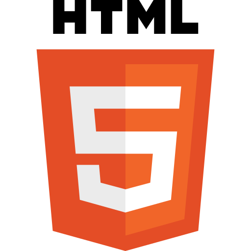

WORK / ACHIEVEMENTS
Here is my work, including honorable mentions such as achievements and awards. For more, visit my LinkedIn.
QSYS @ UofWaterloo | August 2023 - August 2023
International students can join QSYS (Quantum School for Young Students) to study quantum computing—an achievement I'm proud of. I've always wanted to explore this fascinating subject with peers at a top university in Ontario.
COBWEB Reseacher @ UofT | July 2022 - Present
Complexity & Organized Behaviour Researcher at the University of Toronto. Using computational techniques and collaboration with experts from various fields, we aim to understand and improve these systems for societal benefit.
1ST PLACE in CAIC | May 2022 - June 2022
Won first place in the Canadian AI competition, CAIC, organized by IlluminAite. Showcased machine learning's power to address real-life issues by tackling complex problems and finding innovative solutions.
HACKATHON Runner Up | July 2020 - August 2020
Developed a mental health website with advanced features: chatbot, interactive game, and resource page. Enhanced front-end with CSS Bootstrap for better user experience.
For more, check out my LinkedIn →
Languages I Know




Those are the main languages I code in but I am leanring other languges which could help me with my projects which are being worked at.